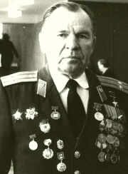
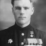
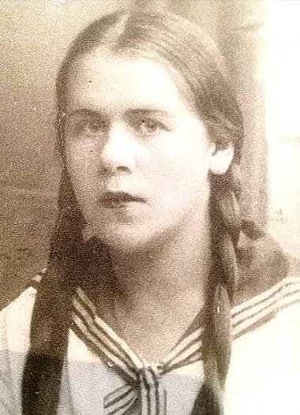
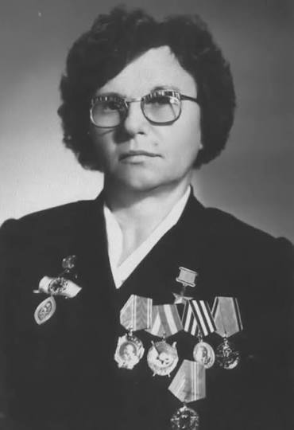
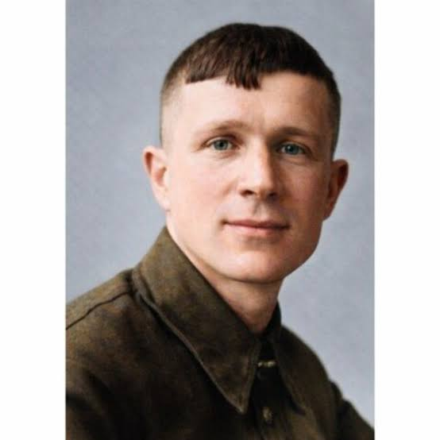
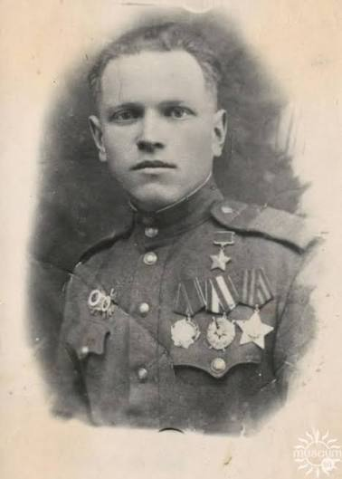
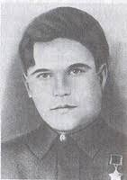

Галерея бессмертного подвига
В этом разделе собраны подлинные истории солдат, партизан, подпольщиков и тружеников тыла. Их мужество — фундамент нашей независимости.

Михаил Николаевич Попов
1924 — 2001 | Младший лейтенант
Герой Советского Союза. Отличился в боях за освобождение Витебской области летом 1944 года. Его взвод одним из первых перерезал стратегическое шоссе Витебск — Лепель, заблокировав отступление крупной группировке противника.

Степан Афанасьевич Пашкевич
1921 — 2014 | Герой Советского Союза
Уроженец Полоцкого района. Отличился при форсировании реки Дунай: в числе первых переправился на берег врага и умело удерживал плацдарм.

Лилия Павловна Костецкая
1919 — 1943 | Полоцкая подпольщица
Отважная связная Полоцкого подполья. Работая в немецкой комендатуре, добывала ценнейшие разведданные и бланки документов для партизан.

Зинаида Михайловна Туснолобова
1920 — 1980 | Санинструктор
Герой Советского Союза, почетный гражданин Полоцка. За 8 месяцев фронта вынесла с поля боя 128 раненых бойцов, проявив величайшее милосердие.

Александр Александрович Минин
1924 — 2002 | Партизанский разведчик
Родился в Полоцком районе, учился в Полоцке. Герой Советского Союза. Будучи разведчиком партизанской бригады, добывал важнейшие сведения о дислокации вражеских гарнизонов на Полотчине и лично пустил под откос несколько эшелонов.

Василий Дмитриевич Халев
1913 — 1944 | Младший лейтенант
Герой Советского Союза (посмертно). Командир танка, который в июле 1944 года одним из первых ворвался в оккупированный Полоцк. Танкисты удерживали мост через Западную Двину, отрезая пути отхода врагу, и героически пали в бою за город.

Виктор Иванович Еронько
1920 — 1991 | Сержант
Родился и жил в Полоцке. Герой Советского Союза. Наводчик орудия, проявивший феноменальное мужество в наступательных операциях 1944 года. Огнем своей пушки в упор уничтожал укрепления, пулеметные точки и технику противника.

Татьяна Савельевна Мариненко
1920 — 1942 | Разведчица, связная
Герой Советского Союза (посмертно). Молодая учительница из деревни Сухой Бор, возглавившая подпольную комсомольскую организацию. Была разведчицей и связной партизанской бригады «Неуловимые». Добывала ценнейшие сведения о вражеских гарнизонах. Не сломалась под пытками, отказавшись выдать соратников.